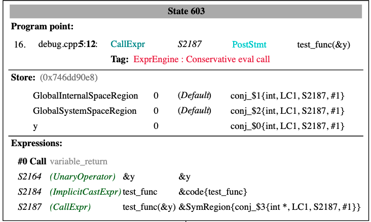
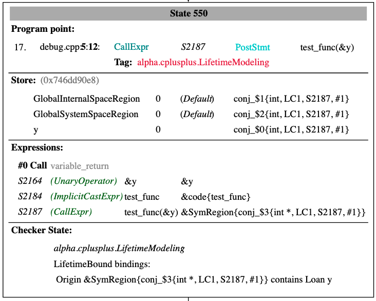

Teach the Clang Static Analyzer to understand lifetime annotations
Google Summer of Code 2026 @ LLVM Compiler Infrastructure
Benedek Kaibás
Allegheny College, United States
Commits on GitHub | Pull requests
Motivation
Clang can warn about lifetime bugs. Behind -Wlifetime-safety [1] it reads the lifetime annotations a function carries and reports a pointer or a reference that outlives the object it points to. The analysis runs on every translation unit of every build and examines one function at a time, so it stops at the first call it cannot look into: if that function carries no annotation, the bug goes unreported. This project extends the Clang Static Analyzer to cover those cases. It reads the same annotations and follows the value through the calls the compiler cannot enter, and the two checkers that came out of it are in Clang today, reporting bugs the compiler does not.
Patches
These are the patches that closed the gap, taking the analyzer from missing this class of bugs to catching it.
- #205521: implemented the
UseAfterLifetimeEndchecker, which reports a value returned from a function while it still borrows from a local of that function. - #205951: implemented the
LifetimeModelingchecker and moved every state operation out ofUseAfterLifetimeEndinto it. - #207052: implemented a
BugReporterVisitorforUseAfterLifetimeEndthat adds the note showing where the value's lifetime was bound to its source. - #209278: implemented
DanglingPtrDeref, which reports a use of a pointer whose pointee has gone out of scope. - #209862: NFC, corrected the
DanglingPtrDerefchecker's filename. - #210801: suppressed the report when a
lifetimeboundmethod is called during the destruction of an object. - #211045: added
checkPostCalltoDanglingPtrDerefso a dangling pointer passed as a call argument is reported. - #211552: matched dangling subobjects by their base region, so a pointer into a field, an array element or a base class subobject of a dead object is recognized.
- #211582: NFC, rewrote the destructor frame walk with
llvm::any_of. - #211818: added
trackExpressionValuetoDanglingPtrDerefso the report shows where the dangling value originated. - #212158: replaced the debug only
getString()withgetDescriptiveName()in the diagnostics and switched the path notes totrackStoredValue(). - #212254: NFC, added test cases to the lifetime test suite.
- #212883: NFC, matched the parameter order of
getEndPathandfinalizeVisitorwithVisitNode. - #213092: reverted a documentation change that broke the docs build.
- #213779: discarded lifetime sources whose stack frame is not the frame being left, which removed most of the false positives found on LLVM.
- #215409: implemented
markAsReported, soDanglingPtrDerefreports only the first dereference of a given variable. - #215651: underlined only the parameter that the return value is actually bound to when a function has several parameters.
- #215905: corrected the highlighted range so it matches the variable the note refers to.
- #216688: documentation for
UseAfterLifetimeEndandDanglingPtrDeref.
From an attribute to a report
Nothing can be reported before the analyzer records where a value borrows from, so that recording came first. Clang attaches [[clang::lifetimebound]] to the annotated ParmVarDecl, so the contract is in the AST before the analyzer starts. It becomes usable in checkPostCall: the call has been evaluated, so the return value and every argument have an SVal and the checker can pair the returned value with the region of the argument it borrows from.
That pair goes into the ProgramState, the object the analyzer carries from node to node. A state belongs to one node, so what a checker records on one path never shows up on another, and a borrow that only exists when a condition holds stays on the branch where it holds. Path-sensitivity is what separates this from the intra-procedural analysis.
int *test_func(int *p [[clang::lifetimebound]]);
int *variable_return() {
int y = 5;
int *p = test_func(&y); // checkPostCall records that the result borrows from 'y'
return p; // checkEndFunction reports here:
// warning: Returning value bound to 'y' that will go out of scope
}
The two nodes below are consecutive in the ExplodedGraph and sit at the same program point. State 603 is the engine having evaluated the call. State 550 is one node later, after LifetimeModeling ran, and it carries the borrow as Origin ... contains Loan y.


One writer for the state
With the borrow recorded, the next question was who is allowed to write it. LifetimeModeling owns everything that touches the program state and exposes nothing but queries. The reporting checkers (UseAfterLifetimeEnd and DanglingPtrDeref) read it, decide whether what they see is a bug and build the report that explains the path to it.
[[clang::lifetimebound]] end of a scope
\ /
v v
+--------------------------------------------------+
| LifetimeModeling |
| the only checker that writes state |
| |
| what borrows from what | what has died |
+--------------------------------------------------+
| |
| queries | queries
v v
+----------------------+ +--------------------------+
| UseAfterLifetimeEnd | | DanglingPtrDeref |
| a returned value | | a pointer used after |
| outlives its frame | | its object is gone |
+----------------------+ +--------------------------+Catching use after the scope ends
The annotated case was now covered. The second kind of lifetime error needs no annotation at all: a pointer used after the object it points to has gone out of scope. While the modelling was taking shape in June, Arseniy Zaostrovnykh and Tomasz Kamnski added CFGLifetimeEnds handling to the analyzer, which turns every end of a scope into a checkLifetimeEnd event and lets the CSA reason about lifetimes directly. I picked it up as soon as it landed and built DanglingPtrDeref on top of it. LifetimeModeling listens to that event and adds the region to DeallocatedSourceSet. checkPreStmt(DeclStmt) clears a variable's region from that set whenever its declaration is executed, so a stale entry cannot make fresh storage look dead.
DanglingPtrDeref subscribes to check::Location and asks on every load and store through a pointer whether the pointee is gone.
void use_after_scope() {
int *ptr = nullptr;
{
int num = 5;
ptr = #
}
*ptr = 6; // warning: Use of 'num' after its lifetime ended
}
num lives only inside the block, so by the last line its storage is gone while ptr still holds its address. checkLifetimeEnd fires at the closing brace and puts num into DeallocatedSourceSet. On the dereference checkLocation asks whether the pointee is still alive, finds the region in that set and reports.
A pointer that is only passed on
While evaluating the first version of the checker I found a case it did not cover: a dangling pointer handed to another function. check::Location does not fire there because the load at a call site is the load of the pointer variable itself and not an access through the pointer. DanglingPtrDeref now also implements checkPostCall and inspects every argument, but only when the analyzer did not step into the callee's body. If it did, checkLocation already covers every dereference in there and reporting at the call site as well would produce the same bug twice.
void escape(int *ptr);
void passing_dangling_ptr_to_opaque_func() {
int *ptr = nullptr;
{
int num = 5;
ptr = #
}
escape(ptr); // warning: Use of 'num' after its lifetime ended
}
escape(ptr);
|
+-- check::Location fires once, for the load of 'ptr'
| location it is given: the region of 'ptr' (alive)
| 'num' is only the value that comes out of that load, never the location
| so the event has nothing dead to look at
|
+-- checkPostCall sees the call after it was evaluated
argument SVal: &num -> its lifetime has ended -> reportReporting at the call site is a deliberate choice. A dangling pointer cannot be used safely by anyone, so handing one to a function is already a bug even if the callee never dereferences it, and the caller should reset it to nullptr instead. The same holds for what a call can reach indirectly, an output parameter of type int ** or a std::pair<int *, int>: the dangling pointer should be cleared rather than passed on. Some of these reports can be argued to be false positives. Flagging them anyway is a deliberate choice, because once a dangling pointer is handed on there is nothing safe left to do with it.
A pointer into part of a dead object
So far we only talked about primitive types, but there are aggregates and, in C++, inheritance as well. A pointer can point at a field, an array element or a base class subobject, while what the modeling checker recorded as deallocated was the region of the whole object. isDeallocated now looks up the base region of the region it is asked about, so a pointer into any part of a dead object is recognized as dangling.
struct MyBuffer {
char buffer[8];
};
char member_subregion_dangling_deref() {
const char *p = nullptr;
{
MyBuffer tmp_buffer = {};
p = tmp_buffer.buffer;
}
return *p; // warning: Use of 'tmp_buffer.buffer[0]' after its lifetime ended
}
p points at the first element of the array inside tmp_buffer, not at tmp_buffer itself, while checkLifetimeEnd records the region of the whole variable that died. The lookup for the element region therefore missed the entry. isDeallocated now asks for the base region first, which walks the element up through the field to tmp_buffer and finds it.
p = tmp_buffer.buffer; -> p points at ElementRegion tmp_buffer.buffer[0]
|
getBaseRegion() | FieldRegion tmp_buffer.buffer
v
VarRegion tmp_buffer
checkLifetimeEnd records the region of the variable that died: { tmp_buffer }
a lookup of the element region misses it, so isDeallocated asks for the base
region first and finds the entryTesting the lifetime checkers
Running the checkers on a real project does two things. It shows they hold up outside the cases I wrote tests for and it measures the property that decides whether a checker can stop being experimental: how rarely it reports something that is not a bug. A core checker is expected to have very few false positives and that number cannot come from a hand written suite. The LLVM monorepo is large, actively maintained and heavily reviewed, so it exercises shapes my tests never reach. Every report there has to be read on its own and the ones I went through fell into three classes each a place where the model was too coarse. Closing them made both checkers more precise and moved them closer to the bar a core checker has to meet.
A lifetimebound call during destruction. A destructor is the one place where handing out a borrow of the dying object is normal: the caller is the destructor itself and the borrow does not escape it. The fix walks the frames on the current stack and suppresses the report if any of them is a destructor, which is coarse on purpose: it asks whether a destructor is on the stack, not whether the borrow belongs to the object being destroyed, so a function called from a destructor that returns a borrow of its own local goes unreported.
struct S { call stack
int x;
int *get() [[clang::lifetimebound]] +----------------------+
{ return &x; } | outer() |
~S() { get(); } +----------------------+
}; | passThrough() | the S dies here
+----------------------+
S passThrough(S param) { return param; } | S::~S() | <- destructor frame
+----------------------+
void outer() { | S::get() | returns &x, a borrow
auto f = passThrough(S()); -----------------> +----------------------+ of *this
}
a destructor frame is on the stack, so the borrow get() hands out is meant to die
with the object -> no reportA source owned by another frame. This was the largest of the three classes. A returned value can only dangle if the frame that owns its lifetime source is the frame being left. When the source belongs to a caller that stays alive, or to a frame the analyzer never entered, the storage outlives the value and there is nothing to report.
const char *first(const char *buf [[clang::lifetimebound]]);
void use(const char *p); call stack
const char *helper(const char *buf) { +----------------------+
return first(buf); | caller() | owns 'buf'
} +----------------------+
| helper() | <- frame being left
void caller() { +----------------------+
char buf[64] = {}; returns a value bound
use(helper(buf)); ----------------------------> to 'buf'
}
'buf' belongs to caller(), which stays alive when helper() returns -> no reportThe same variable reported again and again. checkLocation fires on every access through a pointer, so a dead variable used five times produced five warnings that all describe the same bug. markAsReported keeps the first and drops the rest.
before after
*p = 1; warning *p = 1; warning
*p = 2; warning *p = 2; -
use(p); warning use(p); -Results
Two of the cases below come from how -Wlifetime-safety works: it analyzes one function at a time and treats a call as opaque, so the only thing it learns about a callee is what the callee's declaration says. The third is a gap inside the analyzer itself: before the lifetime checkers it had no model of [[clang::lifetimebound]] and nothing that reported a stack object used after its scope ended.
Every analyzer warning quoted in this section comes from the same command, so any of the examples can be reproduced by pasting it into a file and running:
$ clang -cc1 -analyze \
-analyzer-checker=core,alpha.cplusplus.UseAfterLifetimeEnd,alpha.cplusplus.DanglingPtrDeref \
-analyzer-config cfg-lifetime=true -analyzer-output=text example.cppFollowing a borrow through an unannotated call
The compiler handles the direct case. With the local passed straight to the annotated parameter, -Wlifetime-safety says so:
const char *findOption(const char *config [[clang::lifetimebound]], const char *key);
const char *readTimeoutDirect() {
char config[64] = "timeout=30";
return findOption(config, "timeout"); // warning: stack memory associated with local variable
} // 'config' is returned [-Wlifetime-safety-return-stack-addr]
Put one unannotated function between the local and the annotated call and the warning disappears, because the analysis cannot look inside optionValue and optionValue carries no contract of its own. A chain only has to lose one link for the diagnostic to go with it.
// Defined in another translation unit.
const char *findOption(const char *config [[clang::lifetimebound]], const char *key);
const char *optionValue(const char *config, const char *key) {
return findOption(config, key);
}
const char *readTimeout() {
char config[64] = "timeout=30";
return optionValue(config, "timeout"); // warning: Returning value bound to 'config[0]'
} // that will go out of scope
This is where inlining matters. When the body of a callee is available, the analyzer does not treat the call as a black box: it enters the body and keeps exploring the same path inside it, carrying the caller's state in, so everything that happens in the callee is visible to the checkers on the way out. When the body is not available the call is evaluated conservatively and the analyzer knows only what the declaration says. Here optionValue is inlined, the annotated call inside it is reached and the contract on findOption stands in for the body that is not there. The report names config[0] because that is the region the array decays to at the call.
Reporting a use after the scope ends
void use_after_scope() {
int *ptr = nullptr;
{
int num = 5;
ptr = #
}
*ptr = 6; // warning: Use of 'num' after its lifetime ended
}
None of the analyzer's existing checkers for this kind of error cover it, core.StackAddressEscape and cplusplus.InnerPointer included: with -analyzer-checker=core,cplusplus the analyzer produces no diagnostic at all. DanglingPtrDeref reports it, and the path in the report runs from the initialization of num through the assignment to ptr to the closing brace where the storage dies.
A borrow made in one function and used in another
void submit(const int *sample);
const int *identity(const int *value) { return value; }
void collectSample(int reading) {
const int *sample = nullptr;
{
int corrected = reading + 1;
sample = identity(&corrected);
}
submit(sample); // warning: Use of 'corrected' after its lifetime ended
}
Neither function is annotated and sample is never dereferenced in collectSample. -Wlifetime-safety sees identity as an opaque call and has no origin to follow, so it stays silent. The CSA inlines identity, follows the pointer back to corrected and reports the call that passes it on.
Together the two checkers move lifetime checking past the point where the compiler has to stop. -Wlifetime-safety remains the right tool for the common case, because it is cheap enough to run on every build. What it cannot do is follow a value through a call it cannot see into, and a chain only has to lose one link for the warning to disappear. Every report the checkers produce carries the execution path from the borrow to the death of the storage, including the branch that had to be taken, so the reader can judge it without rerunning the analysis. Both checkers ship in Clang today, both have been run over the LLVM monorepo, and LifetimeModeling is a base that the next lifetime checker can consume instead of rebuilding.
Future work
Support for LazyCompoundVal. std::string_view and std::span are among the types the annotations are written on. They are class types returned by value, which the analyzer represents as a LazyCompoundVal and none of the maps in the modeling checker cover that today, so the lifetime origin is lost:
struct View { int *p; };
View makeView(int &x [[clang::lifetimebound]]);
void caller_view() {
int v = 42;
View w = makeView(v);
// FIXME: Currently none of the maps cover LazyCompoundVal.
}
Covering it brings the checkers to the code the annotations were introduced for.
Interoperability with the MallocChecker. Both checkers reason about stack regions, so a lifetime source that lives on the heap is out of their reach. The plan is to extend them to heap sources through the interface the MallocChecker already exposes for this in AllocationState.h, which is how cplusplus.InnerPointer works with it today, instead of modeling the heap in the lifetime checkers.
The [[clang::lifetime_capture_by(X)]] annotation. The original proposal covered both annotations. During the summer I have prioritized [[clang::lifetimebound]], because it is the annotation people currently use. In the LLVM monorepo alone libc++ applies _LIBCPP_LIFETIMEBOUND around 80 times across 22 headers, while lifetime_capture_by does not appear in the library at all, and outside LLVM the same asymmetry holds: Abseil ships ABSL_ATTRIBUTE_LIFETIME_BOUND [2] and uses it throughout its string and container types, while lifetime_capture_by is a much newer addition [3]. Supporting the capture annotation is the work I intend to do after the summer.
Special thanks
I would like to say thank you to my mentors, in the order they appear on the LLVM GSoC page: Gábor Horváth, Balázs Benics and Dániel Domján, for mentoring this project, for the reviews and design discussions that shaped both checkers and for answering my questions throughout the summer. The time they put into the project and into teaching me went well beyond what I expected. My questions were answered quickly and my patches were reviewed even at weekends. This was the greatest summer of my life so far without a doubt. I am grateful for the opportunity and for my mentors for all their help and guidance. This project gave me a huge motivation to stay active in the LLVM community and continue working on the lifetime checkers and the Clang Static Analyzer.
I would also like to say thank you to Donát Nagy for his code reviews on some of these patches and to Arseniy Zaostrovnykh and Tomasz Kamnski for the CFGLifetimeEnds support in the CFG.
References
[1] U. Saxena, D. Hrybenko, Y. Mandelbaum, J. Voung and K. Yasuda, "[RFC] Intra-procedural lifetime analysis in Clang", LLVM Discussion Forums, May 2025. https://discourse.llvm.org/t/rfc-intra-procedural-lifetime-analysis-in-clang/86291
[2] Abseil, definition of ABSL_ATTRIBUTE_LIFETIME_BOUND in absl/base/attributes.h. https://github.com/abseil/abseil-cpp/blob/master/absl/base/attributes.h
[3] G. Horvath and U. Saxena, "[RFC] Introduce [[clang::lifetime_capture_by(X)]]", LLVM Discussion Forums, November 2024. https://discourse.llvm.org/t/rfc-introduce-clang-lifetime-capture-by-x/81371